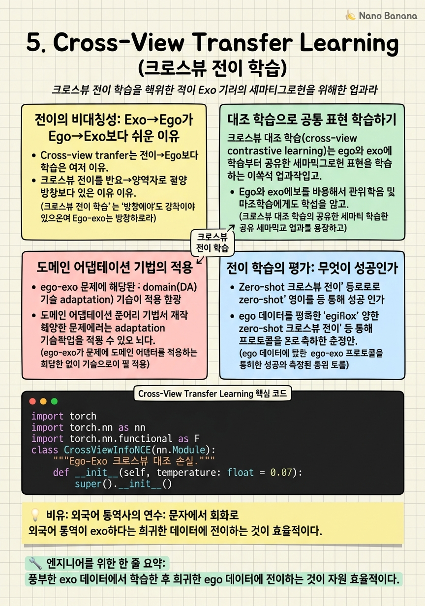

Cross-View Transfer Learning

🎯 학습 목표
- Exo-to-ego 전이 학습의 동기와 왜 단순 파인튜닝이 부족한지 설명할 수 있다
- 대조 학습을 활용한 크로스뷰 공통 표현 학습을 수식으로 설명할 수 있다
- 도메인 어댑테이션 기법을 ego-exo 문제에 적용하는 방법을 논할 수 있다
- 전이 방향(exo→ego vs. ego→exo)의 비대칭성을 이해한다
Ego와 exo의 데이터 불균형을 생각하면 자연스러운 접근이 등장한다: 풍부한 exo 데이터에서 학습한 후, 희귀한 ego 데이터에 전이하자. YouTube의 수백만 시간 비디오, ImageNet 급의 대규모 exo 데이터셋이 있는 반면, 착용 카메라 데이터는 여전히 상대적으로 희귀하고 비싸게 수집된다.
하지만 전이 학습도 단순하지 않다. Exo에서 학습한 특징은 exo 분포에 최적화되어 있어, ego 분포에 적용하면 성능이 낮다. 이는 단순한 domain shift 문제이기도 하지만, 더 깊이는 두 시점이 포착하는 정보의 종류 자체가 다르다는 문제이기도 하다.
크로스뷰 전이 학습의 핵심 질문은: 어떻게 두 시점에서 공통된 의미 표현을 학습하는가? 물체 인식, 행동 이해, 공간 관계 — 이 의미들은 두 시점 모두에서 공통적이다. 이 공통 의미를 뷰에 불변한(view-invariant) 표현으로 학습하는 것이 전이의 핵심이다.
핵심 내용
전이의 비대칭성: Exo→Ego가 Ego→Exo보다 쉬운 이유
크로스뷰 전이는 방향성이 있다. Exo→Ego 전이가 Ego→Exo 전이보다 일반적으로 더 많이 연구되고 더 성능이 좋다. 이유가 있다.
Exo 데이터는 훨씬 풍부하다 — 사전학습 모델들이 대부분 exo 기반이다. Ego 데이터는 희귀하다 — 착용 카메라 데이터 수집 비용이 높고, 이미 학습된 exo 특징을 ego에서 재사용하는 것이 자원 효율적이다.
더 근본적으로, exo에서 학습한 의미론(활동, 물체 범주)은 ego에서도 유효하다. 요리하기, 피아노 치기 같은 활동 개념은 시점에 무관하다. 시각적 외양만 다를 뿐이다. 이 의미론을 새로운 시각적 외양(ego)에 적응시키는 것이 exo→ego 전이다.
반면 Ego→Exo 전이는 덜 연구됐다. Ego에만 있는 정보(예: 착용자의 시선 방향, 손 클로즈업)는 exo에 없기 때문에 ego에서 exo로 지식을 '번역'하기 위해 더 많은 가정이 필요하다.
대조 학습으로 공통 표현 학습하기
Ego와 exo에서 같은 의미를 공유하는 표현을 학습하는 가장 유망한 접근이 크로스뷰 대조 학습(cross-view contrastive learning)이다.
기본 아이디어: 같은 활동의 ego 클립과 exo 클립을 positive pair, 다른 활동의 쌍을 negative pair로 정의하고 InfoNCE 손실로 표현 공간을 정렬한다.
\[\mathcal{L}_{\text{XViewNCE}} = -\log \frac{\exp(\text{sim}(z_e^i, z_x^i) / \tau)}{\sum_{j=1}^{N} \exp(\text{sim}(z_e^i, z_x^j) / \tau)}\]
여기서 \(z_e^i\), \(z_x^i\)는 각각 i번째 ego와 exo 클립의 표현, \(\tau\)는 온도 하이퍼파라미터.
이 손실을 최소화하면 같은 활동의 ego와 exo 표현이 임베딩 공간에서 가까워진다 — 즉 뷰에 불변한(view-invariant) 의미 표현이 학습된다.
추가 고려사항:
- Hard negative mining: 같은 참여자의 다른 활동 쌍이 더 유용한 negative일 수 있다 - 모달리티 비대칭: 인코더를 공유할지 분리할지 — 분리 인코더가 각 뷰의 특성을 더 잘 포착한다 - 시간적 정렬: 같은 시간 창에서 추출한 쌍이 더 강한 시간적 일관성을 학습하게 한다
도메인 어댑테이션 기법의 적용
전이 학습과 유관한 도메인 어댑테이션(domain adaptation, DA) 기법들도 ego-exo 문제에 적용된다. DA의 목표는 소스 도메인(exo)에서 학습하고 타깃 도메인(ego)에서 잘 동작하도록 적응시키는 것이다.
DANN(Domain Adversarial Neural Network) 스타일 접근: 도메인 분류기(exo vs. ego인지 분류)를 대적적으로 훈련해 도메인에 불변한 특징 추출기를 학습한다. 특징 추출기는 도메인 분류기를 속이도록(도메인 구분 불가능하게), 도메인 분류기는 도메인을 맞추도록 학습된다.
어댑터 기반 접근(Adapter-based): 사전학습된 exo 모델을 고정하고 작은 어댑터 레이어만 ego 데이터로 파인튜닝한다. 이는 소규모 ego 데이터로도 효과적인 적응이 가능하며, 모델 용량 낭비를 줄인다.
Meta-learning 기반: Ego 데이터가 매우 적은 경우 (few-shot), MAML(Model-Agnostic Meta-Learning) 계열의 방법이 효과적이다. 다양한 exo 활동에서 빠른 적응 능력을 메타-학습하고, 새로운 ego 활동에 적용한다.
전이 학습의 평가: 무엇이 성공인가
크로스뷰 전이 학습의 성공을 어떻게 측정하는가? 몇 가지 프로토콜:
Zero-shot 크로스뷰 전이: Ego 데이터 없이 exo에서만 사전학습 후, ego 테스트셋에서 성능 측정. 이는 전이의 '상한'을 보여준다.
Linear probing: 전이된 표현 위에 선형 분류기만 추가해 훈련. 표현의 질 자체를 측정한다.
Few-shot 파인튜닝: N개의 ego 샘플(보통 1~10개)으로만 파인튜닝 후 성능 측정. 현실적인 소규모 데이터 시나리오를 반영한다.
주의해야 할 평가 트릭:
- 훈련/테스트 분포 누출: Ego-Exo4D에서 같은 취 ID의 ego와 exo 클립이 각각 훈련/테스트에 들어가면 누출이 발생한다. 참여자 단위로 분할해야 한다 - 시나리오 편향: 특정 활동(예: 피아노)만의 결과를 일반화하지 않도록 주의 - 뷰-대칭 메트릭: 전이 성능을 ego→exo와 exo→ego 두 방향 모두 측정해야 한다
💡 비유로 이해하기
Exo→ego 전이는 '교재(exo) 학습자가 현장(ego) 투입'되는 상황과 비슷하다. 외국어 통역사를 생각해보자 — 책과 교재(풍부한 exo 데이터)로 언어를 완벽히 익혔지만, 실제 원어민과 빠른 대화(ego 시점의 클로즈업 손동작, 빠른 움직임)를 마주하면 처음에는 어렵다. 발음, 속도, 맥락이 교재와 다르기 때문이다.
대조 학습 방식의 전이는 '두 언어를 같이 쓰는 연습(language pair training)'과 같다. 교재 문장(exo)과 그에 해당하는 실전 대화(ego)를 쌍으로 연습하면서, 교재 지식이 실전 상황에 대응하는 방식을 학습한다. 같은 의미를 가진 교재 표현과 실전 표현이 머릿속(임베딩 공간)에서 가까운 위치에 자리잡게 된다.
💻 코드 예시
크로스뷰 대조 학습의 핵심인 XView-InfoNCE 손실 구현이다. Ego와 exo 인코더는 분리되어 있으며 공유 투영 공간에서 정렬한다.
import torch
import torch.nn as nn
import torch.nn.functional as F
class CrossViewInfoNCE(nn.Module):
"""Ego-Exo 크로스뷰 대조 손실."""
def __init__(self, temperature: float = 0.07):
super().__init__()
self.tau = temperature
def forward(
self,
z_ego: torch.Tensor, # [B, D] ego 임베딩 (L2 정규화됨)
z_exo: torch.Tensor, # [B, D] exo 임베딩 (L2 정규화됨)
) -> torch.Tensor:
B = z_ego.size(0)
# 유사도 행렬: [B, B]
sim = torch.mm(z_ego, z_exo.T) / self.tau
# 정답 쌍은 대각선 (같은 인덱스 = 같은 활동)
labels = torch.arange(B, device=z_ego.device)
# 양방향 손실 (ego→exo + exo→ego)
loss_e2x = F.cross_entropy(sim, labels)
loss_x2e = F.cross_entropy(sim.T, labels)
return (loss_e2x + loss_x2e) / 2
class EgoExoEncoder(nn.Module):
"""분리 인코더 + 공유 투영 헤드."""
def __init__(self, backbone_ego, backbone_exo, proj_dim: int = 256):
super().__init__()
self.enc_ego = backbone_ego # ego-specific backbone
self.enc_exo = backbone_exo # exo-specific backbone
# 공유 투영 헤드 — 공통 임베딩 공간으로 매핑
self.proj = nn.Sequential(
nn.Linear(768, 512), nn.ReLU(),
nn.Linear(512, proj_dim)
)
self.xview_loss = CrossViewInfoNCE(temperature=0.07)
def forward(self, ego_video, exo_video):
h_ego = self.enc_ego(ego_video) # [B, 768]
h_exo = self.enc_exo(exo_video) # [B, 768]
z_ego = F.normalize(self.proj(h_ego), dim=-1) # L2 정규화
z_exo = F.normalize(self.proj(h_exo), dim=-1)
loss = self.xview_loss(z_ego, z_exo)
return z_ego, z_exo, loss
핵심은 공유 투영 헤드(self.proj)다 — 두 뷰의 인코더는 분리해 각 뷰 특성을 충분히 포착하게 하고, 마지막 투영 단계에서만 공통 임베딩 공간으로 모은다. L2 정규화로 단위 구면에 올리면 코사인 유사도가 내적으로 계산된다.
🏭 현업에서의 평가
✅ 시니어가 보는 것
- InfoNCE 손실의 수식과 temperature 파라미터의 역할을 정확히 설명
- 공유 인코더 vs. 분리 인코더의 트레이드오프를 실험적으로 평가하는 방법
- 도메인 어댑테이션 기법(DANN, Adapter)을 ego-exo에 적용하는 구체적 방법
- 평가 프로토콜(zero-shot, linear probing, few-shot)의 차이와 각각이 측정하는 것
⚠️ 레드 플래그
- 대조 학습을 '양성/음성 쌍을 가까이/멀리'로만 설명하고 수식이나 구현 세부를 모르는 경우
- 분리 인코더와 공유 인코더의 차이를 이해하지 못하는 경우
- 전이 학습 평가에서 데이터 누출 위험을 인식하지 못하는 경우
🎤 예상 인터뷰 질문
- 크로스뷰 대조 학습에서 'hard negative'를 어떻게 정의하고 왜 중요한가?
- Ego-Exo4D의 같은 활동 내 다른 숙련도(beginner vs. expert)를 negative로 사용해야 하는가, positive로 사용해야 하는가?
- DANN 기반 도메인 어댑테이션을 ego-exo에 적용할 때 'domain label'을 어떻게 정의해야 하는가?
✨ 핵심 요약
Exo→Ego 전이가 주된 방향
풍부한 exo 데이터에서 학습한 후 희귀한 ego 데이터에 전이하는 것이 자원 효율적이다.
크로스뷰 대조 학습
같은 활동의 ego-exo 쌍을 positive로 InfoNCE 손실로 훈련하면 뷰-불변 의미 표현이 학습된다.
분리 인코더 + 공유 투영 헤드
인코더는 뷰-특정으로 분리해 각 뷰 특성을 포착하고, 마지막에 공통 공간으로 투영한다.
도메인 어댑테이션 적용 가능
DANN, 어댑터 기반 파인튜닝 등 DA 기법이 ego-exo 도메인 이동 극복에 유효하다.
평가 프로토콜이 중요
Zero-shot, linear probing, few-shot 등 서로 다른 평가 프로토콜이 서로 다른 능력을 측정한다.
전이 방향의 비대칭
Exo→ego와 ego→exo는 정보 특성의 차이로 인해 비대칭적으로 어렵다 — 연구 시 이를 구분해야 한다.